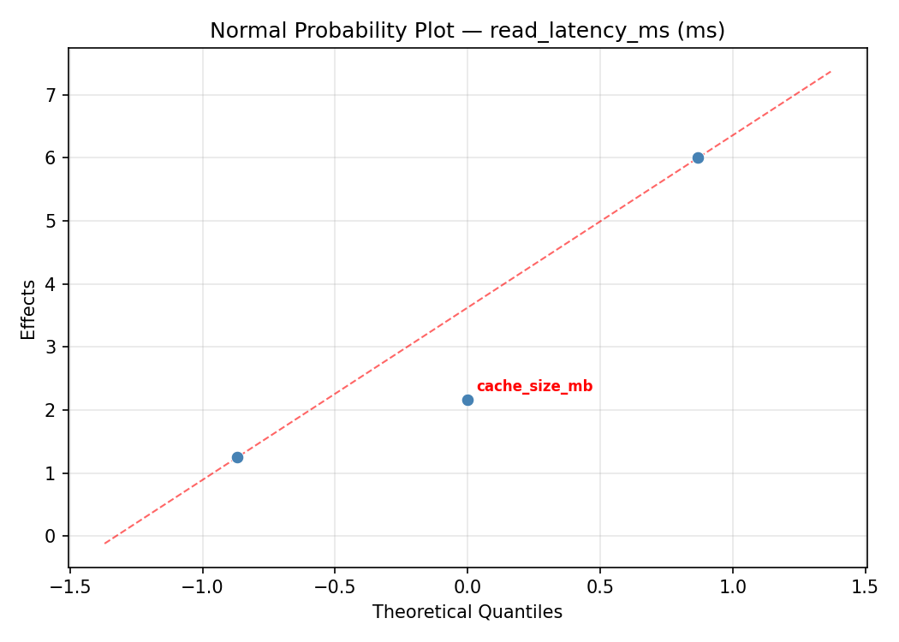
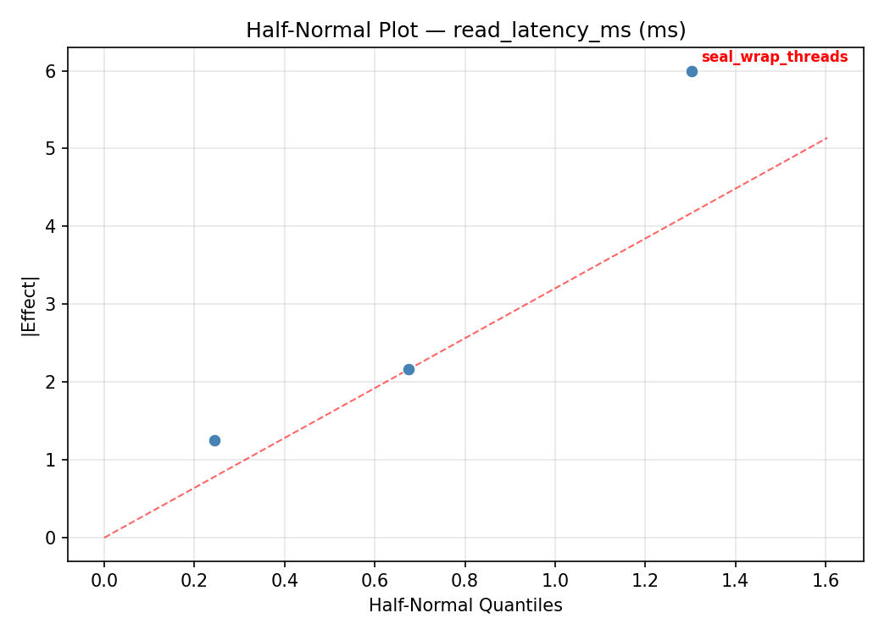
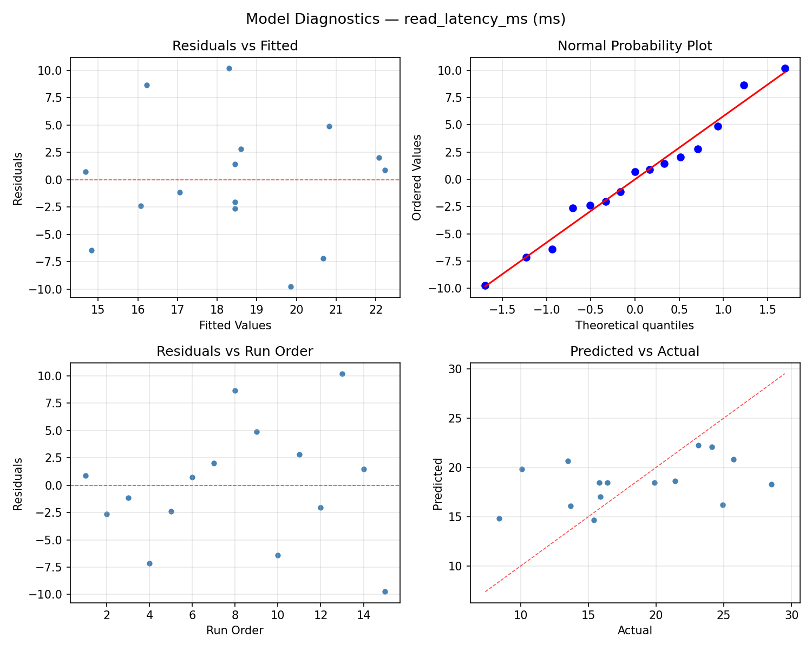
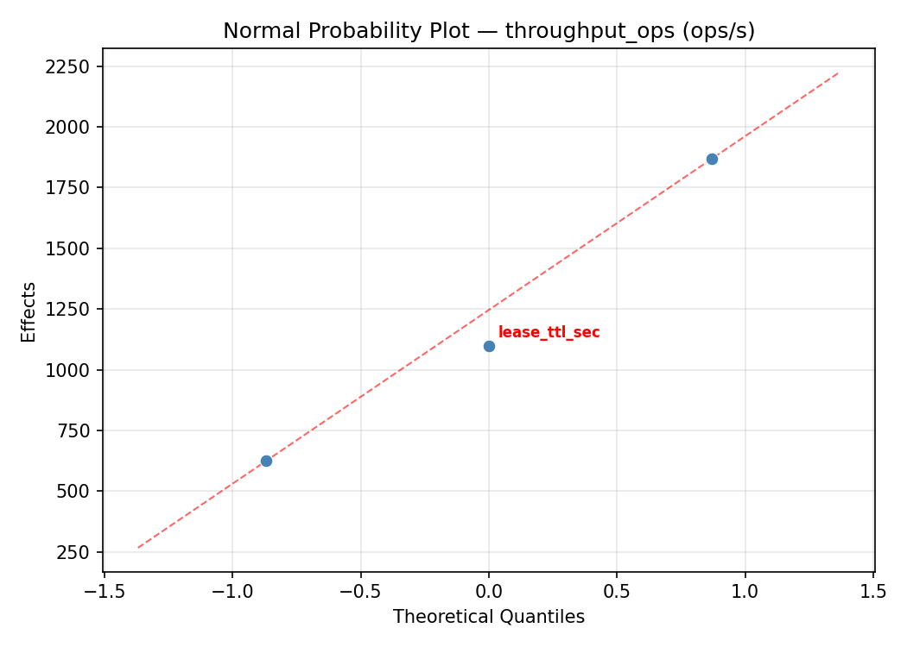
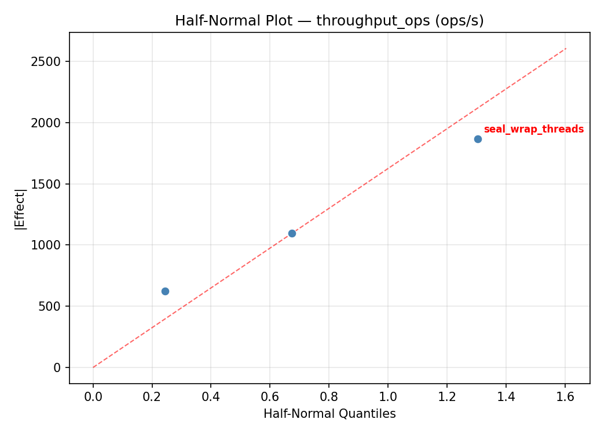
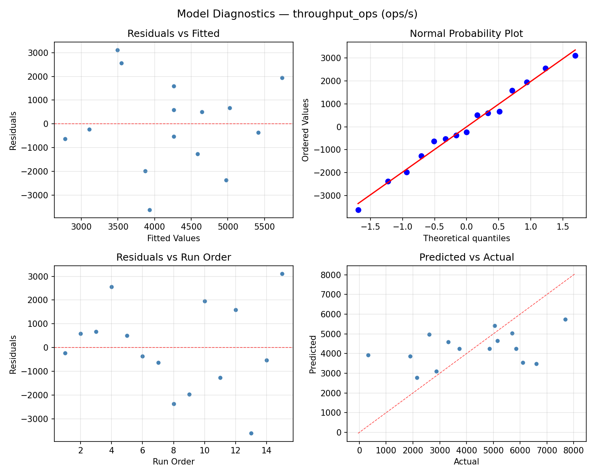

Summary
This experiment investigates secrets vault performance. Box-Behnken design to optimize vault seal wrap threads, cache size, and lease TTL for latency and throughput.
The design varies 3 factors: seal wrap threads (threads), ranging from 1 to 8, cache size mb (MB), ranging from 64 to 512, and lease ttl sec (sec), ranging from 30 to 600. The goal is to optimize 2 responses: read latency ms (ms) (minimize) and throughput ops (ops/s) (maximize). Fixed conditions held constant across all runs include vault backend = consul, seal type = awskms.
A Box-Behnken design was chosen because it efficiently fits quadratic models with 3 continuous factors while avoiding extreme corner combinations — requiring only 15 runs instead of the 8 needed for a full factorial at two levels.
Quadratic response surface models were fitted to capture potential curvature and factor interactions. The RSM contour plots below visualize how pairs of factors jointly affect each response.
Key Findings
For read latency ms, the most influential factors were lease ttl sec (50.2%), cache size mb (36.9%), seal wrap threads (12.9%). The best observed value was 8.4 (at seal wrap threads = 1, cache size mb = 64, lease ttl sec = 315).
For throughput ops, the most influential factors were lease ttl sec (64.4%), cache size mb (32.5%), seal wrap threads (3.1%). The best observed value was 7690.0 (at seal wrap threads = 1, cache size mb = 64, lease ttl sec = 315).
Recommended Next Steps
- Run confirmation experiments at the predicted optimal settings to validate the model.
- Consider whether any fixed factors should be varied in a future study.
Experimental Setup
Factors
| Factor | Low | High | Unit |
|---|
seal_wrap_threads | 1 | 8 | threads |
cache_size_mb | 64 | 512 | MB |
lease_ttl_sec | 30 | 600 | sec |
Fixed: vault_backend = consul, seal_type = awskms
Responses
| Response | Direction | Unit |
|---|
read_latency_ms | ↓ minimize | ms |
throughput_ops | ↑ maximize | ops/s |
Configuration
{
"metadata": {
"name": "Secrets Vault Performance",
"description": "Box-Behnken design to optimize vault seal wrap threads, cache size, and lease TTL for latency and throughput"
},
"factors": [
{
"name": "seal_wrap_threads",
"levels": [
"1",
"8"
],
"type": "continuous",
"unit": "threads"
},
{
"name": "cache_size_mb",
"levels": [
"64",
"512"
],
"type": "continuous",
"unit": "MB"
},
{
"name": "lease_ttl_sec",
"levels": [
"30",
"600"
],
"type": "continuous",
"unit": "sec"
}
],
"fixed_factors": {
"vault_backend": "consul",
"seal_type": "awskms"
},
"responses": [
{
"name": "read_latency_ms",
"optimize": "minimize",
"unit": "ms"
},
{
"name": "throughput_ops",
"optimize": "maximize",
"unit": "ops/s"
}
],
"settings": {
"operation": "box_behnken",
"test_script": "use_cases/64_secrets_vault_performance/sim.sh"
}
}
Experimental Matrix
The Box-Behnken Design produces 15 runs. Each row is one experiment with specific factor settings.
| Run | seal_wrap_threads | cache_size_mb | lease_ttl_sec |
|---|
| 1 | 4.5 | 64 | 30 |
| 2 | 4.5 | 288 | 315 |
| 3 | 8 | 288 | 600 |
| 4 | 8 | 288 | 30 |
| 5 | 4.5 | 288 | 315 |
| 6 | 4.5 | 288 | 315 |
| 7 | 1 | 288 | 600 |
| 8 | 8 | 64 | 315 |
| 9 | 4.5 | 64 | 600 |
| 10 | 8 | 512 | 315 |
| 11 | 1 | 288 | 30 |
| 12 | 4.5 | 512 | 600 |
| 13 | 1 | 64 | 315 |
| 14 | 1 | 512 | 315 |
| 15 | 4.5 | 512 | 30 |
Step-by-Step Workflow
1
Preview the design
$ python doe.py info --config use_cases/64_secrets_vault_performance/config.json
2
Generate the runner script
$ python doe.py generate --config use_cases/64_secrets_vault_performance/config.json \
--output use_cases/64_secrets_vault_performance/results/run.sh --seed 42
3
Execute the experiments
$ bash use_cases/64_secrets_vault_performance/results/run.sh
4
Analyze results
$ python doe.py analyze --config use_cases/64_secrets_vault_performance/config.json
5
Get optimization recommendations
$ python doe.py optimize --config use_cases/64_secrets_vault_performance/config.json
6
Multi-objective optimization
With 2 competing responses, use --multi to find the best compromise via Derringer–Suich desirability.
$ python doe.py optimize --config use_cases/64_secrets_vault_performance/config.json --multi
7
Generate the HTML report
$ python doe.py report --config use_cases/64_secrets_vault_performance/config.json \
--output use_cases/64_secrets_vault_performance/results/report.html
Features Exercised
| Feature | Value |
|---|
| Design type | box_behnken |
| Factor types | continuous (all 3) |
| Arg style | double-dash |
| Responses | 2 (read_latency_ms ↓, throughput_ops ↑) |
| Total runs | 15 |
Analysis Results
Generated from actual experiment runs using the DOE Helper Tool.
Response: read_latency_ms
Top factors: lease_ttl_sec (50.2%), cache_size_mb (36.9%), seal_wrap_threads (12.9%).
ANOVA
| Source | DF | SS | MS | F | p-value |
|---|
| Source | DF | SS | MS | F | p-value |
| seal_wrap_threads | 2 | 4.9102 | 2.4551 | 0.021 | 0.9789 |
| cache_size_mb | 2 | 49.8998 | 24.9499 | 0.217 | 0.8094 |
| lease_ttl_sec | 2 | 72.7427 | 36.3713 | 0.317 | 0.7373 |
| Lack | of | Fit | 6 | 147.0446 | 24.5074 |
| Pure | Error | 2 | 229.7400 | | |
| Error | 8 | 376.7846 | 114.8700 | | |
| Total | 14 | 504.3373 | 36.0241 | | |
Pareto Chart

Main Effects Plot

Normal Probability Plot of Effects

Half-Normal Plot of Effects

Model Diagnostics

Response: throughput_ops
Top factors: lease_ttl_sec (64.4%), cache_size_mb (32.5%), seal_wrap_threads (3.1%).
ANOVA
| Source | DF | SS | MS | F | p-value |
|---|
| Source | DF | SS | MS | F | p-value |
| seal_wrap_threads | 2 | 24310.5548 | 12155.2774 | 0.001 | 0.9991 |
| cache_size_mb | 2 | 4181470.5190 | 2090735.2595 | 0.147 | 0.8657 |
| lease_ttl_sec | 2 | 10720172.2690 | 5360086.1345 | 0.377 | 0.6977 |
| Lack | of | Fit | 6 | 14963605.7238 | 2493934.2873 |
| Pure | Error | 2 | 28465116.6667 | | |
| Error | 8 | 43428722.3905 | 14232558.3333 | | |
| Total | 14 | 58354675.7333 | 4168191.1238 | | |
Pareto Chart

Main Effects Plot

Normal Probability Plot of Effects

Half-Normal Plot of Effects

Model Diagnostics

Response Surface Plots
3D surfaces fitted with quadratic RSM. Red dots are observed data points.
read latency ms cache size mb vs lease ttl sec

read latency ms seal wrap threads vs cache size mb

read latency ms seal wrap threads vs lease ttl sec

throughput ops cache size mb vs lease ttl sec

throughput ops seal wrap threads vs cache size mb

throughput ops seal wrap threads vs lease ttl sec

Multi-Objective Optimization
When responses compete, Derringer–Suich desirability finds the best compromise.
Each response is scaled to a 0–1 desirability, then combined via a weighted geometric mean.
Overall Desirability
D = 0.9545
Per-Response Desirability
| Response | Weight | Desirability | Predicted | Dir |
|---|
read_latency_ms |
1.0 |
|
8.40 0.9545 8.40 ms |
↓ |
throughput_ops |
1.5 |
|
7690.00 0.9545 7690.00 ops/s |
↑ |
Recommended Settings
| Factor | Value |
|---|
seal_wrap_threads | 4.5 threads |
cache_size_mb | 288 MB |
lease_ttl_sec | 315 sec |
Source: from observed run #10
Trade-off Summary
Sacrifice = how much worse than single-objective best.
| Response | Predicted | Best Observed | Sacrifice |
|---|
throughput_ops | 7690.00 | 7690.00 | +0.00 |
Top 3 Runs by Desirability
| Run | D | Factor Settings |
|---|
| #15 | 0.8429 | seal_wrap_threads=8, cache_size_mb=288, lease_ttl_sec=30 |
| #4 | 0.7446 | seal_wrap_threads=8, cache_size_mb=64, lease_ttl_sec=315 |
Model Quality
| Response | R² | Type |
|---|
throughput_ops | 0.4807 | linear |
Full Multi-Objective Output
============================================================
MULTI-OBJECTIVE OPTIMIZATION
Method: Derringer-Suich Desirability Function
============================================================
Overall desirability: D = 0.9545
Response Weight Desirability Predicted Direction
---------------------------------------------------------------------
read_latency_ms 1.0 0.9545 8.40 ms ↓
throughput_ops 1.5 0.9545 7690.00 ops/s ↑
Recommended settings:
seal_wrap_threads = 4.5 threads
cache_size_mb = 288 MB
lease_ttl_sec = 315 sec
(from observed run #10)
Trade-off summary:
read_latency_ms: 8.40 (best observed: 8.40, sacrifice: +0.00)
throughput_ops: 7690.00 (best observed: 7690.00, sacrifice: +0.00)
Model quality:
read_latency_ms: R² = 0.4983 (linear)
throughput_ops: R² = 0.4807 (linear)
Top 3 observed runs by overall desirability:
1. Run #10 (D=0.9545): seal_wrap_threads=4.5, cache_size_mb=288, lease_ttl_sec=315
2. Run #15 (D=0.8429): seal_wrap_threads=8, cache_size_mb=288, lease_ttl_sec=30
3. Run #4 (D=0.7446): seal_wrap_threads=8, cache_size_mb=64, lease_ttl_sec=315
Full Analysis Output
=== Main Effects: read_latency_ms ===
Factor Effect Std Error % Contribution
--------------------------------------------------------------
lease_ttl_sec 6.0250 1.5497 50.2%
cache_size_mb 4.4250 1.5497 36.9%
seal_wrap_threads 1.5500 1.5497 12.9%
=== ANOVA Table: read_latency_ms ===
Source DF SS MS F p-value
-----------------------------------------------------------------------------
seal_wrap_threads 2 4.9102 2.4551 0.021 0.9789
cache_size_mb 2 49.8998 24.9499 0.217 0.8094
lease_ttl_sec 2 72.7427 36.3713 0.317 0.7373
Lack of Fit 6 147.0446 24.5074 0.213 0.9406
Pure Error 2 229.7400 114.8700
Error 8 376.7846 114.8700
Total 14 504.3373 36.0241
=== Summary Statistics: read_latency_ms ===
seal_wrap_threads:
Level N Mean Std Min Max
------------------------------------------------------------
1 4 19.1500 5.2469 13.5000 24.1000
4.5 7 18.5429 7.9273 8.4000 28.5000
8 4 17.6000 3.6414 13.7000 21.4000
cache_size_mb:
Level N Mean Std Min Max
------------------------------------------------------------
288 7 20.1000 6.9735 8.4000 28.5000
512 4 15.6750 5.4811 10.1000 23.1000
64 4 18.3500 4.9170 15.4000 25.7000
lease_ttl_sec:
Level N Mean Std Min Max
------------------------------------------------------------
30 4 15.3500 4.7850 10.1000 21.4000
315 7 18.5571 7.1124 8.4000 28.5000
600 4 21.3750 4.4493 15.8000 25.7000
=== Main Effects: throughput_ops ===
Factor Effect Std Error % Contribution
--------------------------------------------------------------
lease_ttl_sec 2309.7500 527.1427 64.4%
cache_size_mb 1166.8214 527.1427 32.5%
seal_wrap_threads 110.2500 527.1427 3.1%
=== ANOVA Table: throughput_ops ===
Source DF SS MS F p-value
-----------------------------------------------------------------------------
seal_wrap_threads 2 24310.5548 12155.2774 0.001 0.9991
cache_size_mb 2 4181470.5190 2090735.2595 0.147 0.8657
lease_ttl_sec 2 10720172.2690 5360086.1345 0.377 0.6977
Lack of Fit 6 14963605.7238 2493934.2873 0.175 0.9591
Pure Error 2 28465116.6667 14232558.3333
Error 8 43428722.3905 14232558.3333
Total 14 58354675.7333 4168191.1238
=== Summary Statistics: throughput_ops ===
seal_wrap_threads:
Level N Mean Std Min Max
------------------------------------------------------------
1 4 4204.5000 1985.7683 2148.0000 6102.0000
4.5 7 4259.2857 2706.2753 320.0000 7690.0000
8 4 4314.7500 923.2155 3324.0000 5155.0000
cache_size_mb:
Level N Mean Std Min Max
------------------------------------------------------------
288 7 3703.4286 2478.7212 320.0000 7690.0000
512 4 4870.2500 1535.8905 2872.0000 6603.0000
64 4 4621.7500 1846.7968 1901.0000 5845.0000
lease_ttl_sec:
Level N Mean Std Min Max
------------------------------------------------------------
30 4 5468.5000 1463.9040 3324.0000 6603.0000
315 7 4197.5714 2429.2020 320.0000 7690.0000
600 4 3158.7500 1390.3626 1901.0000 4851.0000
Optimization Recommendations
=== Optimization: read_latency_ms ===
Direction: minimize
Best observed run: #10
seal_wrap_threads = 1
cache_size_mb = 64
lease_ttl_sec = 315
Value: 8.4
RSM Model (linear, R² = 0.1688, Adj R² = -0.0579):
Coefficients:
intercept +18.4533
seal_wrap_threads +1.0875
cache_size_mb +0.0375
lease_ttl_sec -3.0750
RSM Model (quadratic, R² = 0.8589, Adj R² = 0.6051):
Coefficients:
intercept +20.9000
seal_wrap_threads +1.0875
cache_size_mb +0.0375
lease_ttl_sec -3.0750
seal_wrap_threads*cache_size_mb -2.8250
seal_wrap_threads*lease_ttl_sec -7.0500
cache_size_mb*lease_ttl_sec -0.1500
seal_wrap_threads^2 -3.2875
cache_size_mb^2 -3.7375
lease_ttl_sec^2 +2.4375
Curvature analysis:
cache_size_mb coef=-3.7375 concave (has a maximum)
seal_wrap_threads coef=-3.2875 concave (has a maximum)
lease_ttl_sec coef=+2.4375 convex (has a minimum)
Notable interactions:
seal_wrap_threads*lease_ttl_sec coef=-7.0500 (antagonistic)
seal_wrap_threads*cache_size_mb coef=-2.8250 (antagonistic)
Predicted optimum (from quadratic model, at observed points):
seal_wrap_threads = 8
cache_size_mb = 288
lease_ttl_sec = 30
Predicted value: 31.2625
Surface optimum (via L-BFGS-B, quadratic model):
seal_wrap_threads = 8
cache_size_mb = 512
lease_ttl_sec = 600
Predicted value: 4.3375
Model quality: Good fit — general trends are captured, some noise remains.
Factor importance:
1. lease_ttl_sec (effect: 6.2, contribution: 43.5%)
2. seal_wrap_threads (effect: 4.3, contribution: 30.3%)
3. cache_size_mb (effect: 3.7, contribution: 26.3%)
=== Optimization: throughput_ops ===
Direction: maximize
Best observed run: #10
seal_wrap_threads = 1
cache_size_mb = 64
lease_ttl_sec = 315
Value: 7690.0
RSM Model (linear, R² = 0.1853, Adj R² = -0.0369):
Coefficients:
intercept +4259.4667
seal_wrap_threads -697.0000
cache_size_mb -135.7500
lease_ttl_sec +920.5000
RSM Model (quadratic, R² = 0.8491, Adj R² = 0.5774):
Coefficients:
intercept +3924.6667
seal_wrap_threads -697.0000
cache_size_mb -135.7500
lease_ttl_sec +920.5000
seal_wrap_threads*cache_size_mb +752.0000
seal_wrap_threads*lease_ttl_sec +2519.5000
cache_size_mb*lease_ttl_sec +132.5000
seal_wrap_threads^2 +823.4167
cache_size_mb^2 +922.4167
lease_ttl_sec^2 -1118.0833
Curvature analysis:
lease_ttl_sec coef=-1118.0833 concave (has a maximum)
cache_size_mb coef=+922.4167 convex (has a minimum)
seal_wrap_threads coef=+823.4167 convex (has a minimum)
Notable interactions:
seal_wrap_threads*lease_ttl_sec coef=+2519.5000 (synergistic)
seal_wrap_threads*cache_size_mb coef=+752.0000 (synergistic)
cache_size_mb*lease_ttl_sec coef=+132.5000 (synergistic)
Predicted optimum (from quadratic model, at observed points):
seal_wrap_threads = 1
cache_size_mb = 64
lease_ttl_sec = 315
Predicted value: 7255.2500
Surface optimum (via L-BFGS-B, quadratic model):
seal_wrap_threads = 8
cache_size_mb = 512
lease_ttl_sec = 600
Predicted value: 8044.1667
Model quality: Good fit — general trends are captured, some noise remains.
Factor importance:
1. lease_ttl_sec (effect: 2163.3, contribution: 45.3%)
2. seal_wrap_threads (effect: 1534.4, contribution: 32.1%)
3. cache_size_mb (effect: 1079.2, contribution: 22.6%)